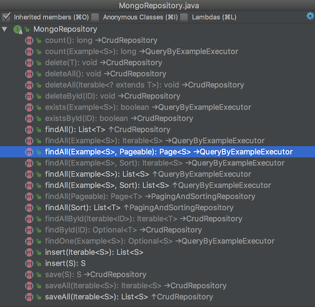

MongoDB 的结构是：数据库 > 集合 (collection) > 文档 (document) > 属性 (field)
MySQL 的结构是: 数据库 > 表 (table) > 记录 (record or row) > 属性 (field or column)
下载安装 不同的系统安装 MongoDB 差别挺大的:
Mac: 使用 brew install mongodb
Linux: 参考 http://qtdebug.com/mac-centos7/#安装-MongoDB
Windows: 下载 然后安装，安装的时候不要选择安装 MongoDB Compass，因为需要联网下载，国内有可能很久都装不好, 或者下载压缩版解压直接用:
在 bin 目录中创建文件 mongod.conf, 内容如下:
1 2 3 4 5 6 7 8 systemLog: destination: file path: D:\MongoDB\logs\mongodb.log logAppend: true storage: dbPath: D:\MongoDB\data net: bindIp: 0.0 .0 .0
然后创建 path 和 dbPath 指向的文件夹 (文件夹不存在则会导致启动失败)
启动访问
启动 MongoDB:
mongodmongod --config C:/etc/mongod.confmongod --auth --config C:/etc/mongod.conf
访问 MongoDB:
mongomongo --host IP使用 IDEA 的插件 Mongo Plugin
漂亮的免费客户端 dbKoda
智能的免费客户端 NoSQLBooster for MongoDB (推荐使用)
删除 MongoDB:
CentOS
关闭 MongoDB 服务: kill -9 pid
查看有 MongoDB 哪些包: rpm -qa | less | grep mongo
删除 MongoDB 的包: yum erase $(rpm -qa | grep mongodb-org)
删除 MongoDB 的目录: rm -rf /var/log/mongodb ; rm -rf /var/lib/mongo
配置文件 1 2 3 4 5 6 7 8 systemLog: destination: file path: D:/MongoDB/logs/mongodb.log logAppend: true storage: dbPath: D:/MongoDB/data net: bindIp: 0.0 .0 .0
默认只允许本机访问，在 mongod.conf 中配置 bindIp 允许其他机器访问:
bindIp = 127.0.0.1, 192.168.1.10: 允许这 2 个 IP 访问bindIp = 0.0.0.0: 允许任意机器访问
注意：Winows 中 MongoDB 的数据库目录需要我们手动创建，如果目录不存在则会启动失败
默认的目录为 C:/data/db
上面配置文件的为 D:/MongoDB/data 和 D:/MongoDB/logs
配置文件路径:
Linux: /etc/mongod.conf，自动创建
Mac: /usr/local/etc/mongod.conf，自动创建
Windows: 手动创建
Windows 安装 MongoDB 后不会自动生成配置文件，如果要使用，需要我们自己创建
最大连接数 进入 Mongo 客户端: mongo，输入 db.serverStatus().connections; 查看输出结果:
1 { "current" : 1 , "available" : 203 , "totalCreated" : 1 }
在 mongodb.conf 中修改最大连接数:
参考 https://www.cnblogs.com/baihuitestsoftware/articles/6951103.html 。
信息
db.collection_name.help(): DBCollection help，例如各种 CURD 命令
1 2 3 db.test.drop() - drop the collection 删除 collection test db.test.dropIndexes() db.test.find(...).count()
show databases: 显示所有数据库，简写 show dbs，和 MySQL 一样
show collections: 显示当前数据库下的所有 collection
创建删除
删除集合: db.collection_name.drop()
插入 语法: 固定前缀 db + 集合名字 + 函数 insert()
1 2 3 4 5 6 7 8 9 10 11 12 13 14 15 16 17 18 19 20 21 22 db.movie.insert({ title : 'Forrest Gump' , directed_by : 'Robert Zemeckis' , stars : ['Tom Hanks' , 'Robin Wright' , 'Gary Sinise' ], tags : ['drama' , 'romance' ], debut : new Date (1994 , 7 , 6 , 0 , 0 ), likes : 864367 , dislikes : 30127 , comments : [{ user : 'user1' , message : 'My first comment' , dateCreated : new Date (2013 , 11 , 10 , 2 , 35 ), like : 0 }, { user : 'user2' , message : 'My first comment too!' , dateCreated : new Date (2013 , 11 , 11 , 6 , 20 ), like : 0 } ] })
查询 语法: 固定前缀 db + 集合名字 + 函数 find()
1 2 3 4 5 6 7 8 9 10 11 12 13 14 15 16 17 18 19 20 21 22 23 24 25 26 27 28 29 30 31 32 33 34 35 36 37 38 db.movie.find() db.movie.find().pretty() db.movie.find({directed_by : 'David Fincher' }) db.movie.find({directed_by : 'David Fincher' , title : 'Seven' }) db.movie.find({$or : [{directed_by : 'David Fincher' }, {title : 'Forrest Gump' }]}) db.movie.find({{likes : {$gt : 50 }}, $or : [{directed_by : 'David Fincher' }, {title : 'Forrest Gump' }]}) db.movie.find({likes : {$gt : 134360 , $lt : 500000 }}) db.movie.find({likes : {$gt : 134360 , $lt : 500000 }, title : 'Seven' }) db.movie.find({likes : {$in : [100 , 200 , 400 ]}}) db.movie.findOne({'title' :'Forrest Gump' }) db.movie.find().skip(2 ).limit(5 ) db.movie.find({}, {title : 1 , directed_by : 1 }) db.movie.find({directed_by : 'David Fincher' }, {title : 1 , stars : 1 }) db.movie.find().count() db.blog.find().sort({byuser : 1 , likes : -1 }).pretty() db.users.find({'address.city' : 'Los Angeles' })
更新 语法: 固定前缀 db + 集合名字 + 函数 update()
1 2 3 4 5 6 7 8 9 10 11 db.movie.update({title : 'Seven' }, {$set : {likes : 1 }}) db.movie.update({title : 'Seven' }, {$inc : {likes : 1 }}) db.movie.update({title : 'Seven' }, {$push : {tags : 'Marvel' }}) db.movie.update({title : 'Seven' }, {$inc : {likes : 1 }}, {multi : true })
保存 语法: 固定前缀 db + 集合名字 + 函数 save()
1 db.movie.save({_id : ObjectId('5a9a0c871e7e7233a7453f16' ), likes : 34 })
save 时，如果已经存在则 替换 整个 document，不存在则 插入 (使用 _id 判断)，不能像 update 一样使用条件参数:
The save() method uses either the insert or the update command, which use the default write concern. To specify a different write concern, include the write concern in the options parameter.
If the document does not contain an _id field, then the save() method calls the insert() method.
If the document contains an _id field, then the save() method is equivalent to an update with the upsert option set to true and the query predicate on the _id field.
update changes an existing document found by your find-parameters and does nothing when no such document exist (unless you use the upsert option).
save doesn’t allow any find-parameters. It checks if there is a document with the same _id as the one you save exists. When it exists, it replaces it. When no such document exists, it inserts the document as a new one. When the document you insert has no _id field, it generates one with a newly created ObjectId before inserting.
删除 语法: 固定前缀 db + 集合名字 + 函数 remove() | deleteOne() | deleteMany()
1 2 3 4 5 6 7 8 9 10 11 12 db.movie.deleteOne({tags : 'romance' }) db.movie.deleteMany({tags : 'romance' }) db.movie.remove({tags : 'romance' }) db.movie.remove({tags : 'romance' }, 1 ) db.movie.remove({})
聚合 语法: 固定前缀 db + 集合名字 + 函数 aggregate()
数据
1 2 3 4 5 6 7 8 9 10 11 12 13 14 15 16 17 18 19 20 21 22 23 24 25 26 [ { title : 'MongoDB Overview' , description : 'MongoDB is no sql database' , by_user : 'runoob.com' , url : 'http://www.runoob.com' , tags : ['mongodb' , 'database' , 'NoSQL' ], likes : 100 }, { title : 'NoSQL Overview' , description : 'No sql database is very fast' , by_user : 'runoob.com' , url : 'http://www.runoob.com' , tags : ['mongodb' , 'database' , 'NoSQL' ], likes : 10 }, { title : 'Neo4j Overview' , description : 'Neo4j is no sql database' , by_user : 'Neo4j' , url : 'http://www.neo4j.com' , tags : ['neo4j' , 'database' , 'NoSQL' ], likes : 750 } ]
聚合
1 2 3 4 5 6 7 8 9 10 11 db.mycol.aggregate([{$group : {_id : '$by_user' , num_tutorial : {$sum : 1 }}}]) 输出 { "_id" : "Neo4j" , "num_tutorial" : 1 } { "_id" : "runoob.com" , "num_tutorial" : 2 } db.mycol.aggregate([{$match : {likes : {$gt : 50 }}}, {$group : {_id : '$by_user' , num : {$sum : 1 }}}]) db.mycol.aggregate([{$match : {likes : {$gt : 50 }}}, {$group : {_id : '$by_user' , num : {$max : '$likes' }}}])
表达式
描述
实例
$sum
计算总和
db.mycol.aggregate([{$group : {_id : "$by_user", num_tutorial : {$sum : "$likes"}}}])
$avg
计算平均值
db.mycol.aggregate([{$group : {_id : "$by_user", num_tutorial : {$avg : "$likes"}}}])
$min
获取集合中所有文档对应值得最小值
db.mycol.aggregate([{$group : {_id : "$by_user", num_tutorial : {$min : "$likes"}}}])
$max
获取集合中所有文档对应值得最大值
db.mycol.aggregate([{$group : {_id : "$by_user", num_tutorial : {$max : "$likes"}}}])
$push
在结果文档中插入值到一个数组中
db.mycol.aggregate([{$group : {_id : "$by_user", url : {$push: "$url"}}}])
$addToSet
在结果文档中插入值到一个数组中，但不创建副本
db.mycol.aggregate([{$group : {_id : "$by_user", url : {$addToSet : "$url"}}}])
$first
根据资源文档的排序获取第一个文档数据
db.mycol.aggregate([{$group : {_id : "$by_user", first_url : {$first : "$url"}}}])
$last
根据资源文档的排序获取最后一个文档数据
db.mycol.aggregate([{$group : {_id : "$by_user", last_url : {$last : "$url"}}}])
按天 (年月日) 统计在线时长:
1 2 3 4 5 6 7 8 9 10 11 12 13 14 15 16 17 18 19 20 21 22 23 24 25 26 27 28 29 30 31 32 33 34 35 36 37 38 39 40 41 42 db.online_tick.aggregate([ { $match : { schoolId : NumberLong("271909232880648192" ) } }, { $group : { _id : { $dateToString : { format : '%Y-%m-%d' , date : '$time' } }, total : { $sum : "$interval" } } }, { $sort : { _id : 1 } } ]); { "_id" : "2019-01-30" , "total" : 360 } db.online_tick.aggregate([ { $match : { schoolId : NumberLong("271909232880648192" ) } }, { $group : { _id : { year : { $year : "$time" }, month : { $month : "$time" }, day : { $dayOfMonth : "$time" }, }, total : { $sum : "$interval" } }}, { $sort : { '_id.year' : 1 , '_id.month' : 1 , '_id.day' : 1 } } ]); { "_id" : { "year" : 2019 , "month" : 1 , "day" : 30 }, "total" : 360 }
对应的 Java 代码:
1 2 3 4 5 6 7 8 9 10 11 12 13 14 15 16 17 18 19 20 21 22 Aggregation agg = Aggregation.newAggregation( Aggregation.match(Criteria.where("schoolId" ).is(schoolId)), Aggregation.project("interval" ).andExpression("{ $dateToString: { date: '$time', format: '%Y-%m-%d'}}" ).as("day" ), Aggregation.group("day" ).sum("interval" ).as("total" ), Aggregation.sort(Sort.Direction.ASC, "_id" ) ); AggregationResults<OnlineTickTime> result = mongoTemplate.aggregate(agg, "online_tick" , OnlineTickTime.class); List<OnlineTickTime> resultList = result.getMappedResults();
1 2 3 4 5 6 7 8 9 10 @Getter @Setter @Accessors(chain = true) public class OnlineTickTime @Id private String day; private int total; }
时区问题：为了国际化，MongoDB 存储时间使用 0 时区 UTC 格式 (而我们的系统使用 8 区的时间)，所以使用时间进行聚合时需要传入时区:
1 2 3 4 5 6 7 8 9 10 11 12 13 14 15 16 private List<OnlineTickTime> onlineTimeByHour (Criteria criteria) Aggregation agg = Aggregation.newAggregation( Aggregation.match(criteria), Aggregation.project("interval" ) .andExpression("{ $dateToString: { date: '$time', format: '%Y-%m-%d', timezone: 'Asia/Shanghai' }}" ).as("date" ) .andExpression("{ $hour: { date: '$time', timezone: 'Asia/Shanghai' }}" ).as("hour" ), Aggregation.group("date" , "hour" ).sum("interval" ).as("total" ), Aggregation.sort(Sort.Direction.ASC, "date" , "hour" ) ); AggregationResults<OnlineTickTime> result = mongoTemplate.aggregate(agg, "online_tick" , OnlineTickTime.class); List<OnlineTickTime> resultList = result.getMappedResults(); return resultList; }
可参考 mongoTemplate andExpression的一些使用方式 ，Mongodb aggregate: convert date to another timezone
ISO8601 是一种 UTC 时间的表示方式。
索引 索引是特殊的数据结构，索引存储在一个易于遍历读取的数据集合中，索引是对数据库表中一列或多列的值进行排序的一种结构。索引通常能够极大的提高查询的效率，如果没有索引，MongoDB 在读取数据时必须扫描集合中的每个文件并选取那些符合查询条件的记录。
语法: 固定前缀 db + 集合名字 + 函数 createIndex()
1 2 3 4 5 db.col.createIndex({title : 1 }) db.col.createIndex({title : 1 , description : -1 }) db.col.createIndex({description : 'text' }) db.col.find({$text : {$search : 'Fincher' }})
查看查询语句的效率使用 explain 函数
1 db.users.find({'address.city' : 'Los Angeles' }).explain()
Java 访问 MongoDB 1 compile 'org.mongodb:mongo-java-driver:3.6.2'
1 2 3 4 5 6 7 8 9 10 11 12 13 14 15 16 17 18 19 20 21 22 23 24 25 26 27 28 29 30 31 32 33 34 35 36 37 38 39 40 41 42 43 44 45 46 47 48 49 50 51 52 import com.mongodb.MongoClient;import com.mongodb.client.FindIterable;import com.mongodb.client.MongoCollection;import com.mongodb.client.MongoDatabase;import com.mongodb.client.model.Filters;import org.bson.Document;public class Test public static void main (String[] args) MongoClient client = new MongoClient("localhost" , 27017 ); MongoDatabase database = client.getDatabase("test" ); MongoCollection<Document> collection = database.getCollection("foo" ); insert(collection); find(collection); update(collection); find(collection); delete(collection); find(collection); } public static void insert (MongoCollection<Document> collection) Document document = new Document() .append("username" , "Alice" ) .append("password" , "Secret" ) .append("age" , 23 ) .append("rate" , 652 ); collection.insertOne(document); } public static void delete (MongoCollection<Document> collection) collection.deleteOne(Filters.eq("username" , "Alice" )); } public static void find (MongoCollection<Document> collection) FindIterable<Document> docs = collection.find(Filters.eq("username" , "Alice" )); for (Document doc : docs) { System.out.println(doc.getInteger("rate" )); } } public static void update (MongoCollection<Document> collection) collection.updateOne(Filters.eq("username" , "Alice" ), new Document("$set" , new Document("rate" , 1000 ))); } }
Spring 集成 MongoDB 可以使用 org.springframework.data:spring-data-mongodb 在 Spring 中集成 MongoDB，使用 JPA + Bean 的方式访问 MongoDB，参考 MongoDB repositories 、Spring + MongoDB 的整合 。
1 compile 'org.springframework.data:spring-data-mongodb:2.0.5.RELEASE'
创建一个 Bean 的类 Person:
1 2 3 4 5 6 7 8 9 10 11 12 13 14 15 16 17 18 19 20 21 22 23 24 25 26 27 28 29 package bean;import lombok.ToString;import org.springframework.data.annotation.Id;import lombok.Getter;import lombok.Setter;import lombok.experimental.Accessors;@Getter @Setter @ToString @Accessors(chain = true) public class Person @Id private Long id; private String firstName; private String lastName; public Person () } public Person (Long id, String firstName, String lastName) this .id = id; this .firstName = firstName; this .lastName = lastName; } }
创建 Repository，继承 MogoRepository，除了默认的方法外，在这里可定义一些访问方法，参考 JPA 的函数命名:
1 2 3 4 5 6 7 8 9 10 11 12 13 14 15 16 package com.xtuer.repository;import bean.Person;import org.springframework.data.mongodb.repository.MongoRepository;import java.util.List;public interface PersonRepository extends MongoRepository <Person , Long > List<Person> findByFirstName (String firstName) ; List<Person> findByLastName (String lastName) ; }
访问测试 (测试前先执行 initData() 函数创建数据，执行后会自动创建一个名为 person 的集合):
1 2 3 4 5 6 7 8 9 10 11 12 13 14 15 16 17 18 19 20 21 22 23 24 25 26 27 28 29 import bean.Person;import com.xtuer.repository.PersonRepository;import org.springframework.context.ApplicationContext;import org.springframework.context.support.ClassPathXmlApplicationContext;public class RepositoryTest public static void main (String[] args) ApplicationContext context = new ClassPathXmlApplicationContext("mongodb.xml" ); PersonRepository repository = context.getBean("personRepository" , PersonRepository.class); initData(repository); System.out.println(repository.findByFirstName("Kelly" )); System.out.println(repository.findByLastName("Giles" )); } public static void initData (PersonRepository repository) repository.insert(new Person(1L , "Hodgson" , "Giles" )); repository.save(new Person(2L , "Richardson" , "Giles" )); repository.insert(new Person(3L , "Kelly" , "Hall" )); repository.insert(new Person(4L , "Veblen" , "Hall" )); repository.insert(new Person(5L , "Cowper" , "Gerard" )); repository.insert(new Person(6L , "Chaucer" , "Oliver" )); repository.insert(new Person(7L , "Hood" , "David" )); repository.insert(new Person(8L , "Walton" , "Lester" )); repository.insert(new Person(9L , "Whitehead" , "Eddy" )); } }
除了使用 MongoRepository 外，可以使用 MongoTemplate 访问。
MongoRepository 提供了下面这些方法:

XML 配置文件:
1 2 3 4 5 6 7 8 9 10 11 12 13 14 15 16 17 18 19 20 21 22 23 24 25 <?xml version="1.0" encoding="UTF-8"?> <beans xmlns ="http://www.springframework.org/schema/beans" xmlns:xsi ="http://www.w3.org/2001/XMLSchema-instance" xmlns:mongo ="http://www.springframework.org/schema/data/mongo" xmlns:context ="http://www.springframework.org/schema/context" xsi:schemaLocation ="http://www.springframework.org/schema/beans http://www.springframework.org/schema/beans/spring-beans.xsd http://www.springframework.org/schema/data/mongo http://www.springframework.org/schema/data/mongo/spring-mongo.xsd http://www.springframework.org/schema/context http://www.springframework.org/schema/context/spring-context.xsd" > <context:annotation-config /> <mongo:mongo-client host ="localhost" port ="27017" > <mongo:client-options connections-per-host ="8" threads-allowed-to-block-for-connection-multiplier ="4" connect-timeout ="1000" max-wait-time ="1500" socket-keep-alive ="true" socket-timeout ="1500" /> </mongo:mongo-client > <mongo:db-factory id ="mongoDbFactory" dbname ="test" mongo-ref ="mongoClient" /> <mongo:template id ="mongoTemplate" db-factory-ref ="mongoDbFactory" write-concern ="NORMAL" /> <mongo:repositories base-package ="com.xtuer.repository" /> </beans >
Query 进行查询 JPA 的方式简单查询时非常方便，复杂一些的情况就需要使用 MongoTemplate 了。使用 Criteria 创建 Query，PageRequest 进行分页，Sort 进行排序：
1 mongoTemplate.findOne(Query.query(Criteria.where("receiverId" ).is(receiverId)), Document.class, "message" );
1 2 3 4 5 PageRequest pageable = PageRequest.of(page, size, Sort.by(Sort.Direction.DESC, "createdTime" )); Criteria criteria = Criteria.where("receiverId" ).is(receiverId).and("read" ).is(read); List<Message> messages = mongoTemplate.find(Query.query(criteria).with(pageable), Message.class, "message" );
多个 OR 条件使用 Criteria.orOperator 进行连接，例如下面的这个语句有多个 AND，并且还有多个 OR 条件，OR 中还有 AND：
1 2 3 4 5 6 7 8 9 10 11 12 13 14 15 Criteria orCriteria = new Criteria().orOperator( Criteria.where("type" ).is("SCHOOL" ).and("schoolId" ).is(schoolId), Criteria.where("type" ).is("CLAZZ" ).and("groupId" ).is(clazzId), Criteria.where("type" ).is("TEAM" ).and("groupId" ).is(teamId) ); Criteria criteria = Criteria.where("schoolId" ).is(schoolId).and("createdTime" ).gt(from).andOperator(orCriteria); Sort sortByCreatedTime = Sort.by(Sort.Direction.ASC, "createdTime" ); mongoTemplate.find(Query.query(criteria).with(sortByCreatedTime), Message.class, MESSAGE_GROUP);
上面程序的 MongoDB 查询语句为:
1 2 3 4 5 6 7 8 9 db.message_group.find( {$and : [{schoolId : 1 }, {createdTime : {$gt : ISODate("2017-04-09T09:25:26.286Z" )}}, { $or : [ {$and : [{type : 'SCHOOL' }, {schoolId : 1 }]}, {$and : [{type : 'CLAZZ' }, {groupId : 1 }]}, {$and : [{type : 'TEAM' }, {groupId : 2 }]}, ] }]} )
Update 进行更新 使用 Query 查询符合条件的记录，用 Update 进行更新：
1 2 3 4 Criteria criteria = Criteria.where("_id" ).is(messageId).and("receiverId" ).is(receiverId); Update update = Update.update("read" , true ); mongoTemplate.updateFirst(Query.query(criteria), update, MESSAGE_USER);
使用 updateMulti 更新符合条件的多个 document。
Upsert 插入或更新 If no document is found that matches the query, a new document is created and inserted by combining the query document and the update document.
1 2 Document document = new Document().append("receiverId" , receiverId).append("time" , date); mongoTemplate.upsert(Query.query(Criteria.where("receiverId" ).is(receiverId)), Update.fromDocument(document), MESSAGE_FETCH);
save 执行的也是 upsert 操作，但是只是使用 _id 进行比较，upsert 能够使用 Query 进行查询。
1 2 3 4 5 Query query = new Query(Criteria.where("word" ).is(word).and("grade" ).is(grade).and("subject" ).is(subject)); Update update = new Update().inc("count" , 1 ); mongoTemplate.findAndModify(query, update, FindAndModifyOptions.options().upsert(true ), CloudWord.class, COLLECTION_WC);
Remove 进行删除 用 remove(Query query, String collectionName) 和 findAllAndRemove(Query query, String collectionName) 进行删除。
批量操作 使用 BulkOperations 进行批量操作:
1 2 3 4 5 6 7 8 9 10 11 12 13 14 15 16 17 18 19 20 21 22 23 24 25 26 27 public void upsertSubjectiveQuestionsWithAnswer (List<QuestionWithAnswer> questions ) if (questions.size() == 0 ) { return ; } BulkOperations bulkOps = mongoTemplate.bulkOps(BulkOperations.BulkMode.UNORDERED, QUESTION_CORRECT); for (QuestionWithAnswer question : questions) { Update update = Update.update("examId" , question.getExamId()) .set("examRecordId" , question.getExamRecordId()) .set("questionId" , question.getQuestionId()) .set("teacherId" , question.getTeacherId()) .set("answers" , question.getAnswers()) .set("score" , question.getScore()) .set("scoreStatus" , question.getScoreStatus()) .set("comment" , question.getComment()); Query condition = Query.query(Criteria .where("examRecordId" ).is(question.getExamRecordId()) .and("questionId" ).is(question.getQuestionId()) ); bulkOps.upsert(condition, update); } bulkOps.execute(); }
参考资料 MongoDB 教程
MongoDB 两小时入门
MongoDB Manual
MongoDB repositories
Spring + MongoDB 的整合
MongoTemplate用法笔记